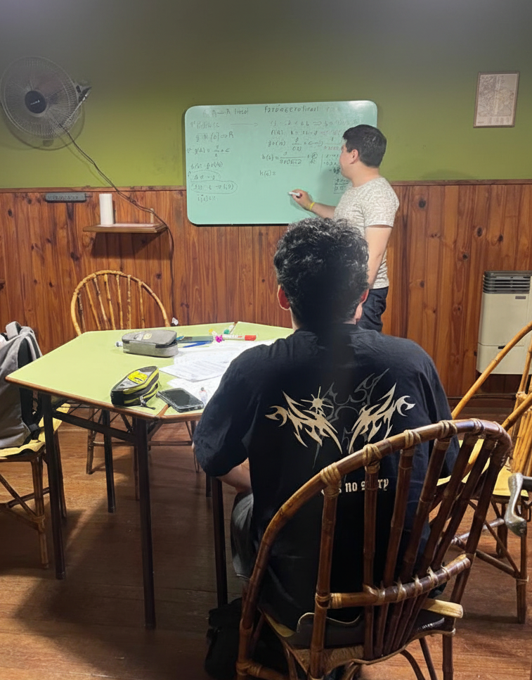

25 años de experiencia
apoyo personalizado
seguimiento continuo

• En Centro de Aprendizaje acompañamos a estudiantes desde hace más de 25 años, brindando clases particulares que promueven el progreso en la escuela, el nivel terciario y la universidad. Ofrecemos un espacio de confianza, dedicación y calidad educativa, donde cada estudiante puede aprender con docentes que están atentos a sus necesidades.
• Somos un equipo de profesionales comprometidos con el desarrollo académico de cada alumno. Creemos que aprender es un proceso continuo, que se construye día a día, por eso aplicamos una metodología personalizada, adaptada a las necesidades y objetivos de cada estudiante. Además los padres pueden seguir de cerca el avance de las clases con nuestro sistema de feedback
• A lo largo de nuestra trayectoria, cientos de alumnos han encontrado en nuestras clases presenciales y virtuales el apoyo que necesitaban para superar dificultades, mejorar su rendimiento y seguir mejorando su formación educativa.